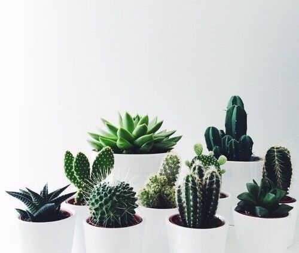
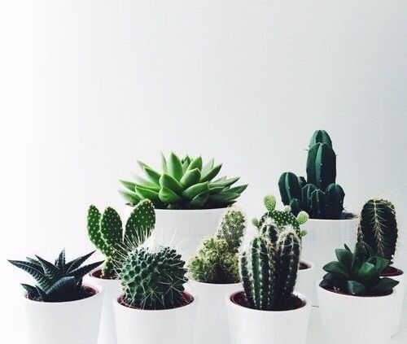
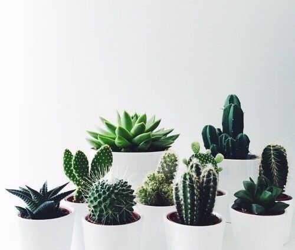

Native to the Americas and typically found in areas subject to drought, cacti or cactuses are perfectly adapted to live in the intense heat and environment of the desert, which means they can most definitely survive the warm and dry conditions of a centrally heated home. It's perfect for the less green-fingered as you only need to water moderately – in fact, it's actually better to underwater than it is to overwater. A cactus is a great addition to the home thanks to its striking shape, size and flowers. Seeing as no cactus plant is the same, it's a unique, decorative way to add interest to your living space, whether it's on your windowsill or grouped together on a shelf. Although slow-growing, a cactus plant is fairly self-sustaining as it stores moisture in its roots, leaves and stems, and so largely regulates its own food intake. A cactus plant likes a light, airy and warm spot – but not too hot, around 18°C is ideal – and can cope well in direct sunlight.

Web Technology - Class Activity 3 - Introduction to CSS